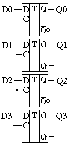
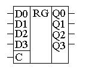
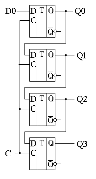
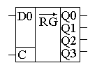
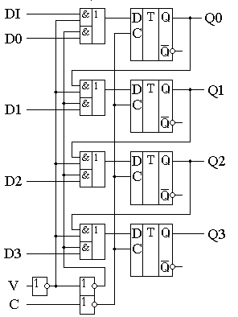
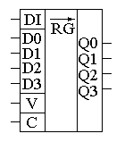

Регистры
Регистр — это последовательностное логическое устройство, используемое для хранения n-разрядных двоичных чисел и выполнения преобразований над ними. С каждым регистром обычно связано комбинационное цифровое устройство, с помощью которого обеспечивается выполнение некоторых операций над словами.
Типичными являются следующие операции:
- прием слова в регистр;
- передача слова из регистра;
- поразрядные логические операции;
- сдвиг слова влево или вправо на заданное число разрядов;
- преобразование последовательного кода слова в параллельный и обратно;
- установка регистра в начальное состояние (сброс).
Фактически любое цифровое устройство можно представить в виде совокупности регистров, соединенных друг с другом при помощи комбинационных цифровых устройств.
Регистры классифицируются по следующим видам:
- накопительные (регистры памяти, хранения);
- сдвигающие.
В свою очередь сдвигающие регистры делятся:
по способу ввода-вывода информации:
- параллельные,
- последовательные,
- комбинированные;
по направлению передачи информации:
- однонаправленные,
- реверсивные.
Регистры обычно строятся на основе D-триггеров. При этом для построения регистров могут использоваться как универсальные D триггеры, так и триггеры-защелки. При использовании для построения параллельного регистра триггеров-защелок регистр называется регистр-защелка. Параллельный регистр служит для запоминания многоразрядного двоичного слова. Количество триггеров, входящее в состав параллельного регистра определяет его разрядность. Схема и условное графическое обозначение четырёхразрядного параллельного регистра приведены на рисунке 1.


Рис. 1 - Схема и условное графическое обозначение параллельного регистра
При записи информации в параллельный регистр все биты (двоичные разряды) записываются одновременно.
Последовательный регистр (регистр сдвига) обычно служит для преобразования последовательного кода в параллельный и наоборот. Схема и условное графическое обозначение регистра, осуществляющего преобразование последовательного кода в параллельный, приведены на рисунке 2.


Рис. 2 - Схема и условное графическое обозначение последовательного регистра
Регистры сдвига выполняют обычно как универсальные последовательно-параллельные микросхемы. Переключение регистра из параллельного режима в последовательный и наоборот осуществляется при помощи мультиплексора. Схема такого регистра и его условное графическое обозначение приведены на рисунке 3.


Рис. 3 - Схема и условное графическое обозначение универсального регистра
Источники
pue8.ru - Логические электронные регистры: назначение, применение, устройство, классификация